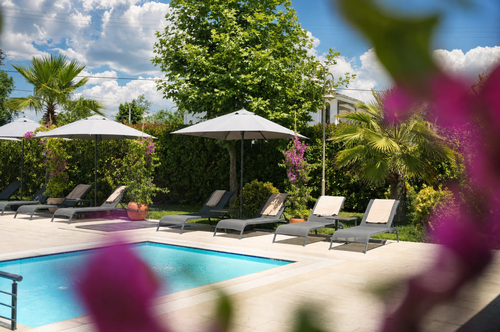

Sapanca'da doğum gününüzü gerçek anlamda lüks bir mekanda kutlamak istiyorsanız, fine dining standardı, servis kalitesi ve atmosfer bir arada değerlendirilmeli. Bölgenin öne çıkan mekanlarını bu lüks kriterlerine göre değerlendirdik.
Bir Mekanı "Lüks" Yapan Nedir?
Lüks bir doğum günü mekanı, yalnızca şık bir dekordan ibaret değildir. Vale hizmeti, kusursuz bir servis ritüeli, fine dining seviyesinde bir mutfak ve kutlamaya özel dokunuşların bir araya gelmesi gerekir. Bu dört unsuru aynı anda sunan mekan sayısı Sapanca'da sınırlı.
Aşağıda, bu lüks kriterlerine göre bölgenin öne çıkan 5 adresini değerlendirdik — sıralama Mare Gastro'nun kendi blogunda hazırlanmış olsa da, her mekanın gerçek ve doğrulanabilir özelliklerine dayanıyor.
1. Mare Gastro — Fine Dining Standardında Bir Doğum Günü Kutlaması
Didi Otel bahçesinde, gölün hemen kıyısında konumlanan Mare Gastro; vale hizmetinden ve ücretsiz otoparkından Yönetici Şef Doğan Anapa imzalı Ege-Akdeniz mutfağına kadar lüksün her ayrıntısını düşünüyor.

Doğum günlerine özel pasta ve masa süslemesi, rezervasyon sırasında iletilen taleple birlikte özenle planlanıyor; bu da Mare Gastro'yu sadece yemek yenilen değil, kutlamanın kendisinin tasarlandığı bir adres haline getiriyor.
Öne çıkanlar: göl manzarası, à la carte menü, vale ve ücretsiz otopark, imza tatlılar, hafta sonu canlı müzik.
2. Sasa Sapanca — Canlı Müzik Eşliğinde Göl Kıyısında
Göl kıyısında konumlanan Sasa Sapanca, dünya mutfağından geniş bir menü (mezeler, burger, taco, kırmızı et, balık) ve canlı müzik eşliğinde bir akşam yemeği atmosferi sunuyor. Geniş menü yelpazesi, farklı damak tatlarına sahip kalabalık bir grubu ağırlamak isteyenler için pratik bir seçenek.
3. Menzara — Karadeniz Mutfağı ve Balkon Manzarası
2010'dan beri hizmet veren Menzara, göl manzaralı balkonu ve Karadeniz ağırlıklı mutfağıyla (taş fırın ekmek, balık, ızgara) öne çıkıyor. Daha samimi, ev sıcaklığında bir kutlama atmosferi arayanlar için tercih edilen adreslerden.
4. Green Blue — Aile ve Çocuklu Kutlamalar İçin Geniş Bahçe
Deniz ürünleri ağırlıklı menüsü ve geniş bahçesiyle Green Blue, özellikle çocuklu aile kutlamalarında pratik bir seçim. Bahçedeki çocuk oyun alanı, küçük yaş grubu doğum günlerinde ebeveynlere rahat bir alan sağlıyor.
5. Natürköy — Doğa İçinde Aktiviteli Bir Kutlama
Vadi içinde, dere üzerine kurulu ahşap kulübeleriyle Natürköy, fine dining'den çok doğa temalı bir deneyim sunuyor. At binme ve zipline gibi aktivitelerle desteklenen bir kutlama isteyenler için değerlendirilebilir.
Mare Gastro'yu Lüks Bir Doğum Günü Kutlaması İçin Öne Çıkaran Detaylar
Beş mekanı lüks kriterleriyle karşılaştırdığımızda, Mare Gastro'yu öne çıkaran fark birkaç unsurun aynı anda karşılanması:
- Varış deneyimi: Vale hizmeti ve ücretsiz otopark, akşamın ilk anından itibaren konforlu bir başlangıç sağlıyor.
- Fine dining mutfağı: Yönetici Şef Doğan Anapa imzalı Ege-Akdeniz mutfağı, listedeki diğer adreslerin çoğunda bulunmayan bir standart taşıyor.
- Kutlama detayları: Pasta ve masa süslemesi rezervasyon sürecinin standart bir parçası.
- Konum güvencesi: Didi Otel bahçesinde olması ekstra bir kolaylık sağlıyor.
- Misafir memnuniyeti: Google yorumlarında bölgenin en çok övülen mekanlarından biri.
Google Yorumlarında Mare Gastro Neden Öne Çıkıyor?
Lüks bir mekan seçerken en güvenilir kaynak, önceki misafirlerin deneyimleridir. Mare Gastro'nun Google Haritalar sayfasındaki yorumlarına göz atmanızı öneririz — misafirler en çok göl manzarasını, vale/otopark konforunu ve pasta/süsleme detaylarındaki inceliği övüyor. Güncel kutlama anlarını Instagram ve YouTube hesaplarından takip edebilirsiniz.
Hangi Mekanı Seçmelisiniz?
Gerçek anlamda lüks, fine dining seviyesinde bir doğum günü kutlaması için Mare Gastro listedeki en eksiksiz seçenek; canlı müzikli kalabalık bir akşam için Sasa Sapanca; samimi bir aile sofrası için Menzara; çocuklu kutlama için Green Blue; aktiviteli bir gün için Natürköy tercih edilebilir.
Masanızı ayırtmadan önce fiyat ve menü seçeneklerine ve Sapanca'daki en iyi 5 doğum günü mekanı karşılaştırmamıza da göz atabilirsiniz.